Todos saem e voltam a Balmaceda em 10 dias. Ao trocar o roteiro, o site inteiro muda junto: mapa, paradas, hospedagem, estradas, passeios, fotos e custos.
Lado a lado
Comparemosquatro
Distância, rípio, horas de volante e quanto cada um sai por pessoa. O custo usa a calculadora: carro, voo, comida e hospedagem escolhidos em cada roteiro.
Arraste a tabela para o lado ›
mais curtodia mais levemais em conta
mais em conta
mais em conta
menos rípiomais em conta
Custo por pessoapela calculadora
R$ …
R$ …
R$ …
R$ …
Km na estradapercurso principal
~665 km
~700 km
~863 km
~1.255 km
Com os desviospasseios de carro
~850 km
~880 km
~1.050 km
~1.440 km
Rípioestrada de cascalho
63%
66%
78%
30%
Horas ao volantesoma dos trechos, sem paradas
~14 h
~14h30
~17h30
~23h45
Trecho mais longo
~125 kmPuerto Río Tranquilo → Villa Cerro Castillo
~245 kmCochrane → Villa Cerro Castillo
~186 kmPuerto Bertrand → Villa Cerro Castillo
~345 kmRaúl Marín Balmaceda → Coyhaique
Onde dormemnoites em cada base
Coyhaique 1
Chile Chico 1
Cochrane 2
Puerto Río Tranquilo 3
Villa Cerro Castillo 2
Coyhaique 1
Villa Cerro Castillo 2
Puerto Río Tranquilo 3
Cochrane 2
Villa Cerro Castillo 1
Villa Cerro Castillo 1
Puerto Río Tranquilo 2
Cochrane 1
Caleta Tortel 2
Puerto Bertrand 1
Villa Cerro Castillo 2
Coyhaique 1
Puyuhuapi 2
Futaleufú 2
Chaitén 1
Raúl Marín Balmaceda 2
Coyhaique 1
Balsa no lago
SimIbáñez → Chile Chico
Não
Não
Não
Passeios sugeridos
6Capillas de Mármol, Glaciar Exploradores, Laguna Cerro Castillo…
5Laguna Cerro Castillo, Capillas de Mármol, Glaciar Exploradores…
6Glaciar Steffen, Isla de los Muertos, Cerro Vigía e passarelas de Tortel…
6Ventisquero Colgante e Bosque Encantado, Termas de Puyuhuapi, Rafting no Río Futaleufú…
Marca do roteiro
1.850 km²de lago turquesa
460 kmde rípio na Ruta 7, ida e volta
670 kmde rípio no percurso principal
4.000 mmde chuva por ano em Queulat
Passeios entram no custo só com os valores que vocês preencherem na calculadora. Km e horas são estimativas; no rípio, conte 20 a 30% a mais de tempo.
0dias na estrada
0km de estrada
0de rípio
0de lago turquesa
0pontos altos
0dias na estrada
0km de estrada
0de rípio
0de rípio na Ruta 7, ida e volta
0pontos altos
0dias na estrada
0km de estrada
0de rípio
0de rípio no percurso principal
0pontos altos
0dias na estrada
0km de estrada
0de rípio
0de chuva por ano em Queulat
0pontos altos
O lago que os tehuelches chamavam de
Chelenko
Um lago do tamanho de um mar, de água turquesa por causa do pó das geleiras. Matheus e Gabriel vão dar a volta nele inteiro: de balsa, por uma estrada pendurada na rocha e por um vale de rios cor de jade.
Até o rio mais caudaloso do Chile, o
Baker
Uma estrada só, percorrida nos dois sentidos, do asfalto de Coyhaique ao rípio que desce até Cochrane. Na ida, tudo é novidade; na volta, Matheus e Gabriel já sabem onde parar e reencontram os mesmos lagos e rios com outro céu.
Onde o carro fica no alto do morro e o vilarejo começa a pé:
Tortel
Um vilarejo sem nenhuma rua, pendurado sobre o fiorde em passarelas e escadas de cipreste, na boca do rio mais caudaloso do Chile. Matheus e Gabriel vão dirigir até onde a estrada deixa de existir e seguir de barco até o gelo do Campo de Hielo Norte.
Ao norte de Coyhaique, a estepe vira
Selva
Do lado do Pacífico a Patagônia é verde, molhada e cheia de cachoeiras: geleiras penduradas sobre fiordes, florestas de musgo e rios cor de turquesa. Matheus e Gabriel vão dirigir até onde a estrada encontra o mar, num vilarejo de pescadores com golfinhos na baía.
O percurso
AneldoLago
Saindo de Balmaceda no sentido anti-horário: Coyhaique, a balsa até Chile Chico, a Ruta 265 pela margem sul do lago, Cochrane, de volta pelo vale do Baker até Río Tranquilo e, no fim, Cerro Castillo. Toque nos pontos para ver cada parada.
RotadoMatheus
Saindo de Balmaceda, a Ruta 7 leva a Coyhaique, Villa Cerro Castillo, Puerto Río Tranquilo e, pelo vale do Baker, até Cochrane. Depois a dupla volta pela mesma estrada até Cerro Castillo e Balmaceda. É o percurso que o Matheus traçou no mapa: a volta mostra a paisagem do outro lado e dá uma segunda chance de rever os mirantes favoritos com outra luz. Toque nos pontos para ver cada parada.
Atéofimdaestrada
Saindo de Balmaceda para o sul: Cerro Castillo, as Capillas de Mármol em Río Tranquilo, o vale do Baker até Cochrane e, no fim, a X-904 até Caleta Tortel, onde a estrada acaba e tudo se faz a pé ou de barco. A volta passa por Puerto Bertrand e termina com a trilha da Laguna Cerro Castillo. Toque nos pontos para ver cada parada.
Norteselvagem
Saindo de Balmaceda para o norte: Coyhaique, a Ruta 7 até Puyuhuapi e o Parque Nacional Queulat, o vale turquesa do Futaleufú, Chaitén e o Parque Pumalín, e o rípio ao longo do Río Palena até Raúl Marín Balmaceda, na beira do Pacífico. A volta é um dia longo de estrada direto até Coyhaique. Toque nos pontos para ver cada parada.
Se o Google Maps mandar vocês pela Argentina: hoje ele considera a Ruta 7 entre Puerto Bertrand e Cochrane interditada por obras de asfalto (trecho Confluencia–Puente Chacabuco) e desvia por Chile Chico e Paso Roballo, com ~30 h de rota. Não sigam esse desvio. A estrada continua sendo o caminho, com fechamentos em horários de obra (relatos de 11h30 às 15h). Perto da viagem, confiram o estado da Ruta 7 em carretera-austral.cl.
Parada a parada
Ondevocêsdormemeporondepassam
1
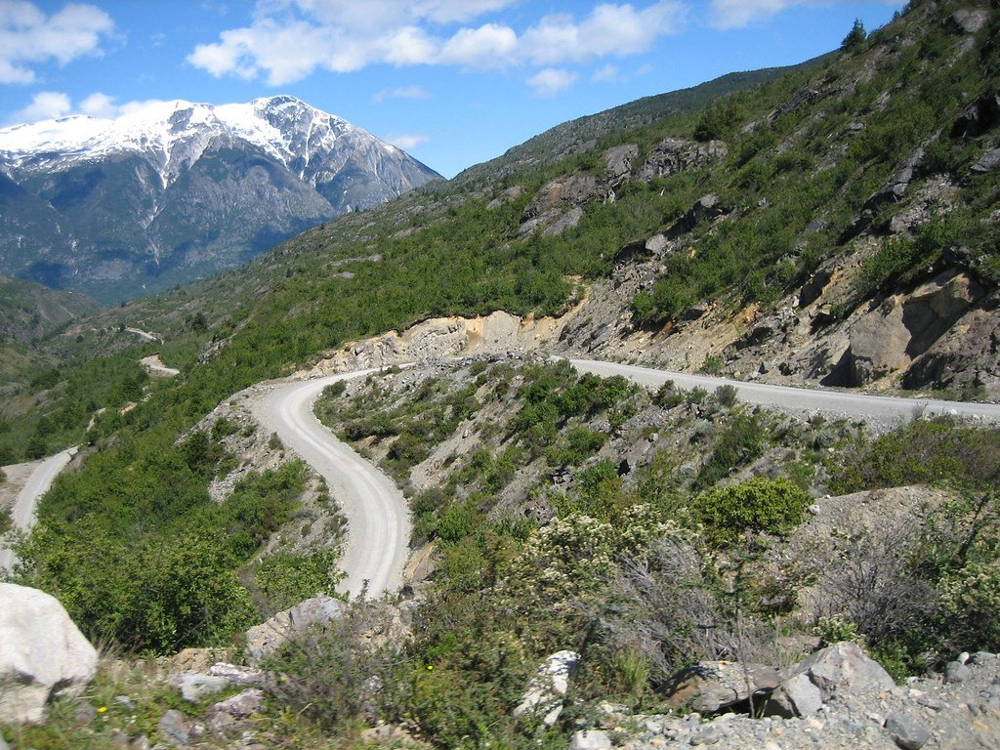
Balmaceda
Aeroporto
Chegada · dia 1 e dia 10
Retirada e devolução do carro. Vilarejo pequeno, só passagem.
2
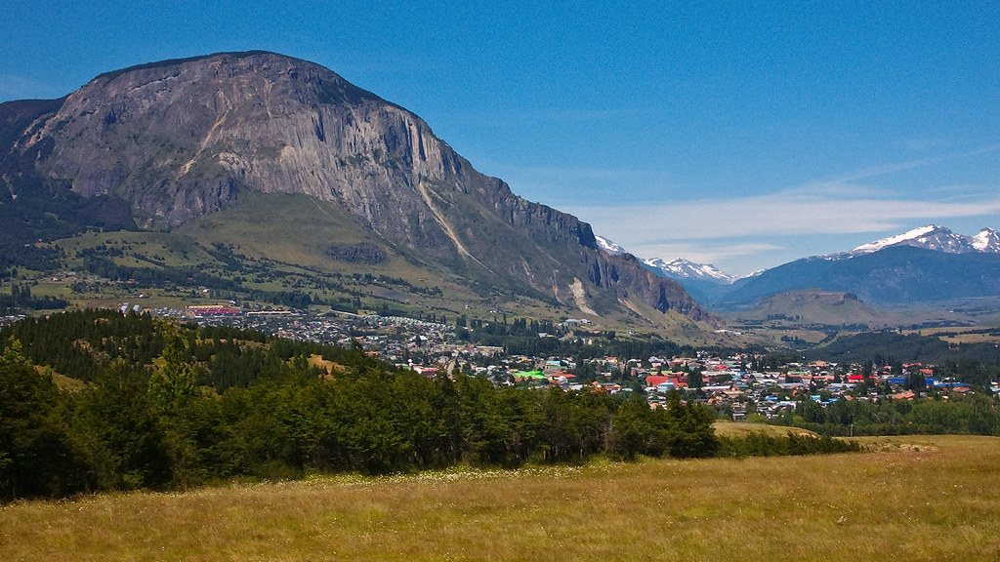
Coyhaique
55 km · ~1 h
1 noite · dia 1
Maior cidade da região: sacar pesos, supermercado grande, chip de celular.
3
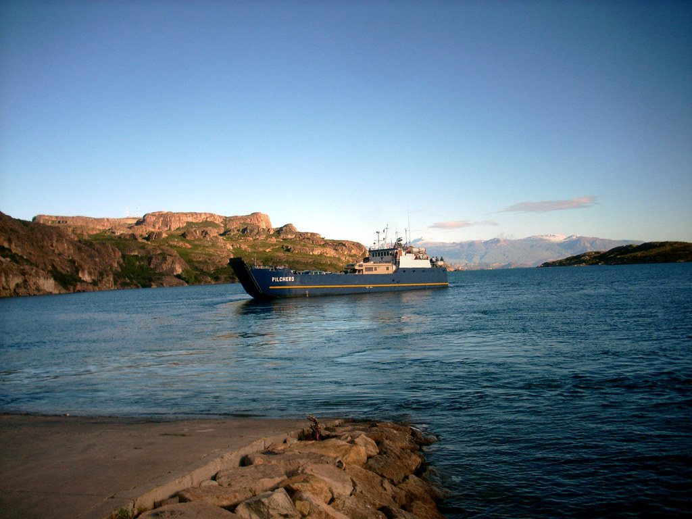
Puerto Ibáñez
115 km · ~1h45
Passagem · dia 2
Porto da balsa. Salto del Río Ibáñez fica no caminho.
4
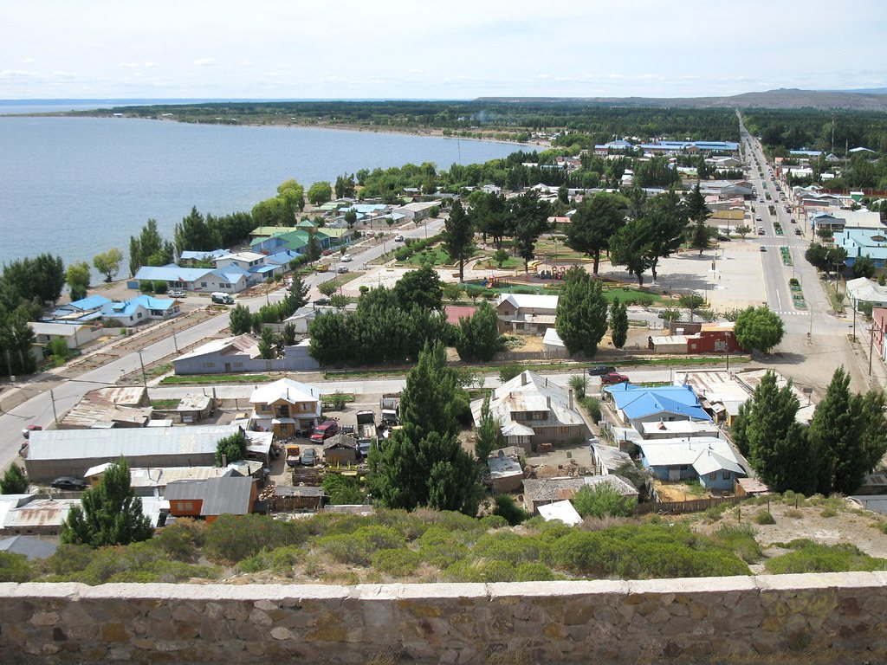
Chile Chico
Balsa · ~2 a 2h30
1 noite · dia 2
Cidade ensolarada na beira do Lago General Carrera. Mirador Cerro de las Banderas.
5
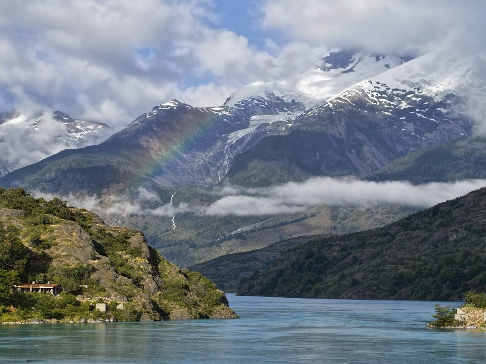
Puerto Guadal
~120 km · ~3 h
Passagem · dia 3
Fim da Ruta 265 (Paso Las Llaves). Almoço e combustível.
6
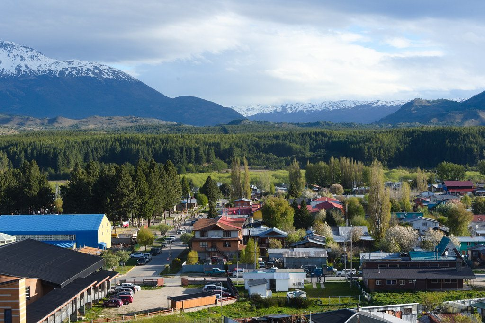
Cochrane
~70 km · ~1h45
2 noites · dias 3 e 4
Base para o Parque Nacional Patagonia (Valle Chacabuco).
7
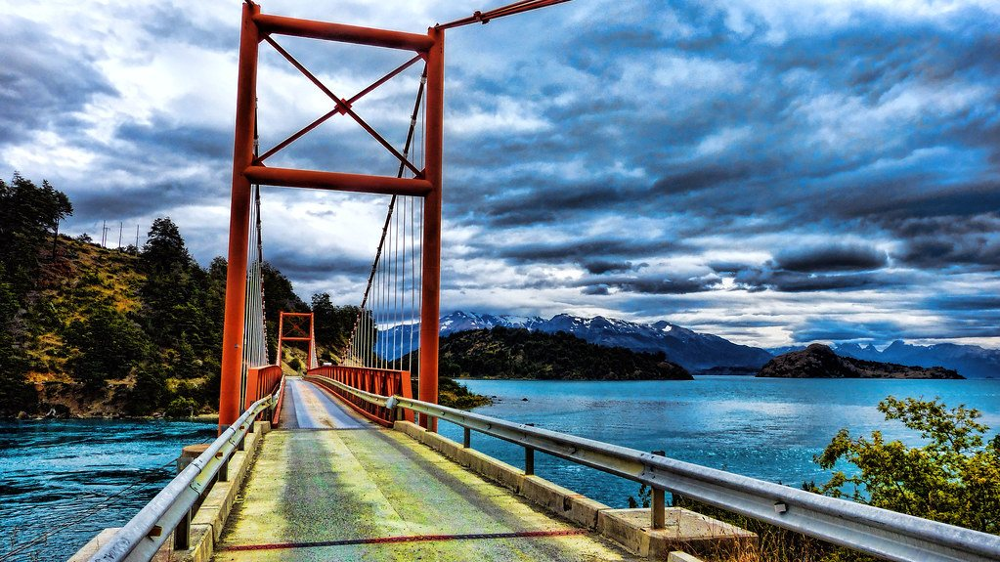
Puerto Bertrand
~50 km · ~1 h
Passagem · dia 5
Río Baker turquesa e Confluencia Baker–Nef. Rafting opcional.
8
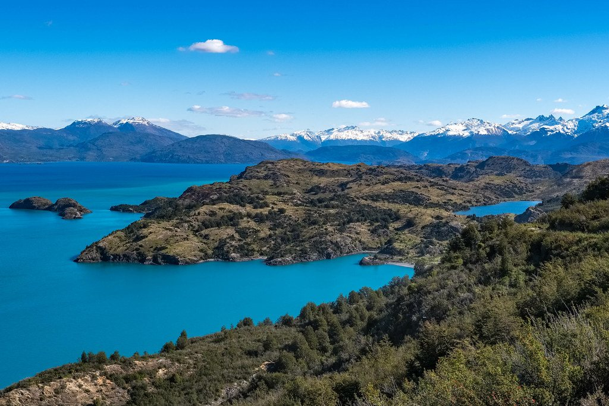
Puerto Río Tranquilo
~65 km · ~1h30
3 noites · dias 5, 6 e 7
Capillas de Mármol e Glaciar Exploradores.
9
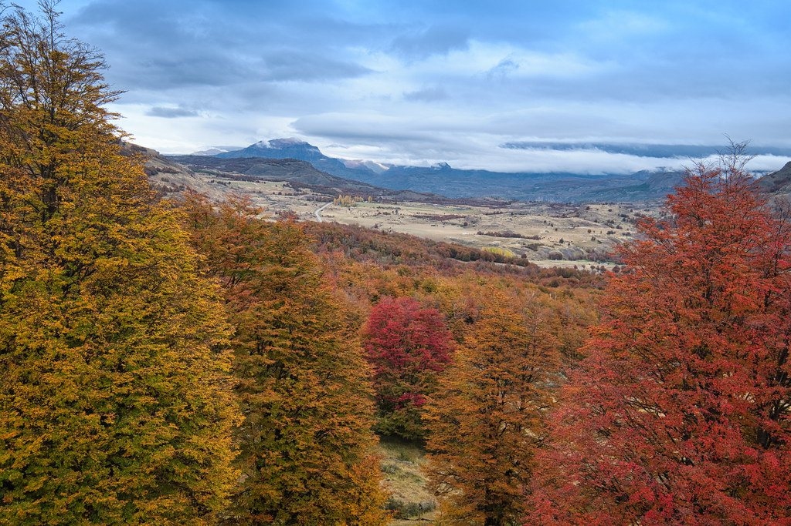
Villa Cerro Castillo
125 km · ~3 h
2 noites · dias 8 e 9
Trilha da Laguna Cerro Castillo, o ponto alto da viagem.
10
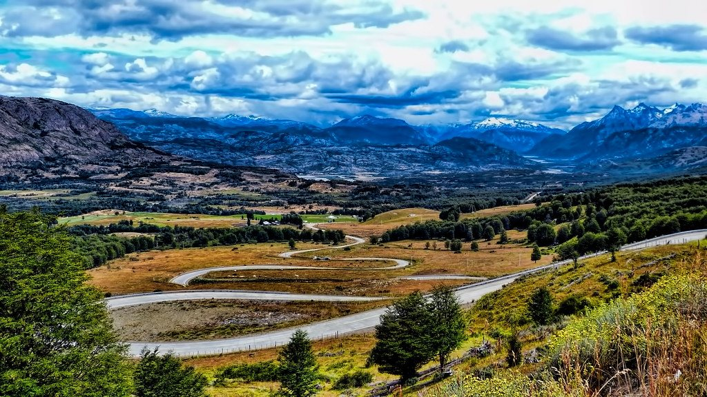
Balmaceda
65 km · ~1 h
Volta · dia 10
Devolução do carro e voo para casa.
Noites: Coyhaique 1 · Chile Chico 1 · Cochrane 2 · Río Tranquilo 3 · Villa Cerro Castillo 2. Voos supostos por volta das 14h; no rípio, conte 20 a 30% a mais de tempo que o Google.
1
Balmaceda
Aeroporto
Chegada · dia 1 e dia 10
Retirada e devolução do carro. Vilarejo pequeno, só passagem.
2
Coyhaique
~55 km · ~1 h
1 noite · dia 1
Maior cidade da região: sacar pesos, supermercado grande, chip de celular e tanque cheio antes do rípio.
3
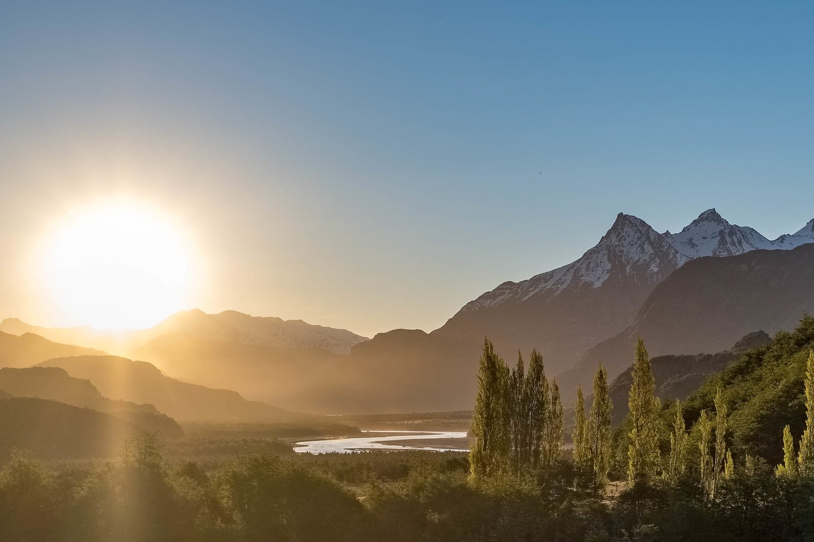
Villa Cerro Castillo
~95 km · ~1h30
2 noites · dias 2 e 3
Vilarejo aos pés das torres do Cerro Castillo. No dia 3, a trilha da Laguna Cerro Castillo, o desafio mais duro da viagem.
4
Puerto Río Tranquilo
~125 km · ~3 h
3 noites · dias 4, 5 e 6
Base para as Capillas de Mármol e para o Valle e o Glaciar Exploradores. Três noites dão folga se o vento cancelar o barco.
5
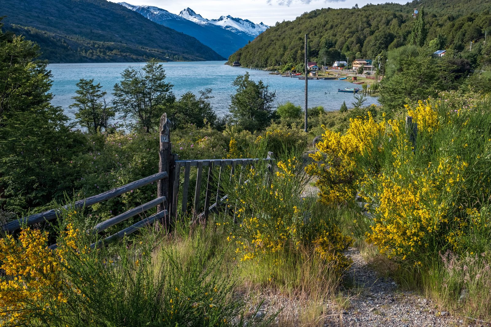
Puerto Bertrand
~65 km · ~1h30
Passagem · dia 7
Vilarejo na beira do Lago Bertrand, onde nasce o Río Baker. Logo ao sul ficam a Confluencia Baker–Nef e o Mirador Río Baker.
6
Cochrane
~50 km · ~1 h (+ paradas)
2 noites · dias 7 e 8
O ponto mais ao sul do roteiro. Base para o Parque Nacional Patagonia (Valle Chacabuco) e o setor Tamango, colado à cidade.
7
Villa Cerro Castillo
~245 km · ~5h30 a 6 h
1 noite · dia 9
O dia longo de volta pela Ruta 7, agora no sentido norte, com o lago e o Baker vistos do outro lado. Dormir aqui deixa o último trecho curto.
8
Balmaceda
~65 km · ~1 h
Volta · dia 10
Subida da Cuesta del Diablo, devolução do carro e voo para casa.
Noites: Coyhaique 1 · Villa Cerro Castillo 2 · Río Tranquilo 3 · Cochrane 2 · Villa Cerro Castillo 1. O dia 9 é o mais puxado (~245 km, quase tudo em rípio): saiam cedo e abasteçam em Cochrane. Voos supostos por volta das 14h; no rípio, conte 20 a 30% a mais de tempo que o Google.
1
Balmaceda
Aeroporto
Chegada · dia 1 e dia 10
Retirada e devolução do carro. Vilarejo pequeno, só passagem; o último supermercado grande fica em Coyhaique.
2
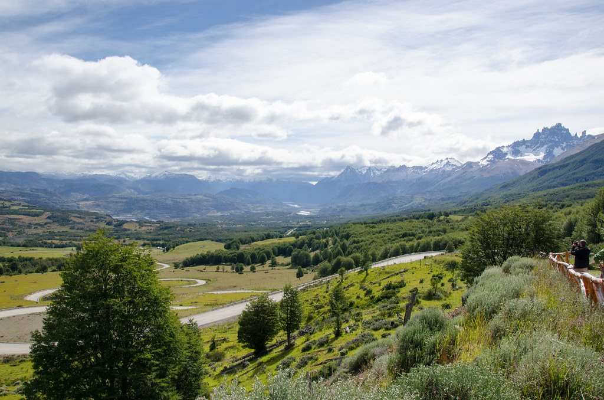
Villa Cerro Castillo
~72 km · ~1 h
1 noite · dia 1
Primeira noite aos pés das torres do Cerro Castillo, depois de descer a Cuesta del Diablo.
3
Puerto Río Tranquilo
~120 km · ~3 h
2 noites · dias 2 e 3
Base para as Capillas de Mármol no Lago General Carrera. O segundo dia serve de reserva se o vento cancelar o barco.
4
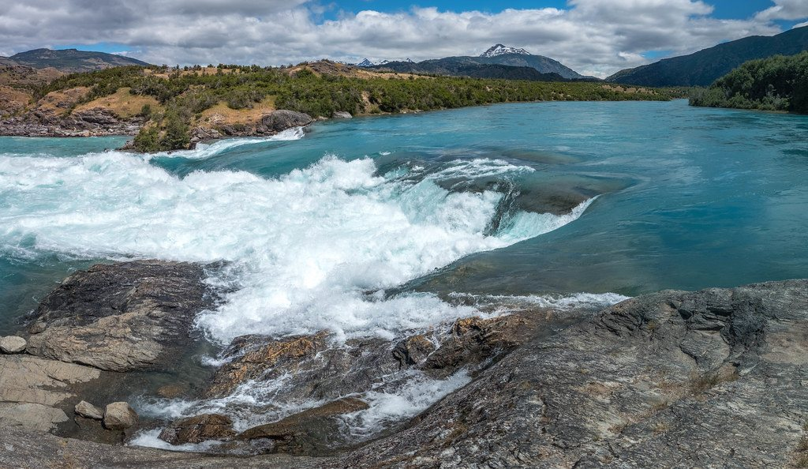
Puerto Bertrand e Confluencia
~67 km · ~1h30
Passagem · dia 4
Ponte do Desagüe, o Río Baker turquesa e a cachoeira da Confluencia Baker–Nef, a poucos km ao sul do vilarejo.
5
Cochrane
~48 km · ~1 h
1 noite · dia 4
Última cidade com posto de combustível, banco e supermercado antes de Tortel: encha o tanque e compre o lanche dos próximos dias.
6
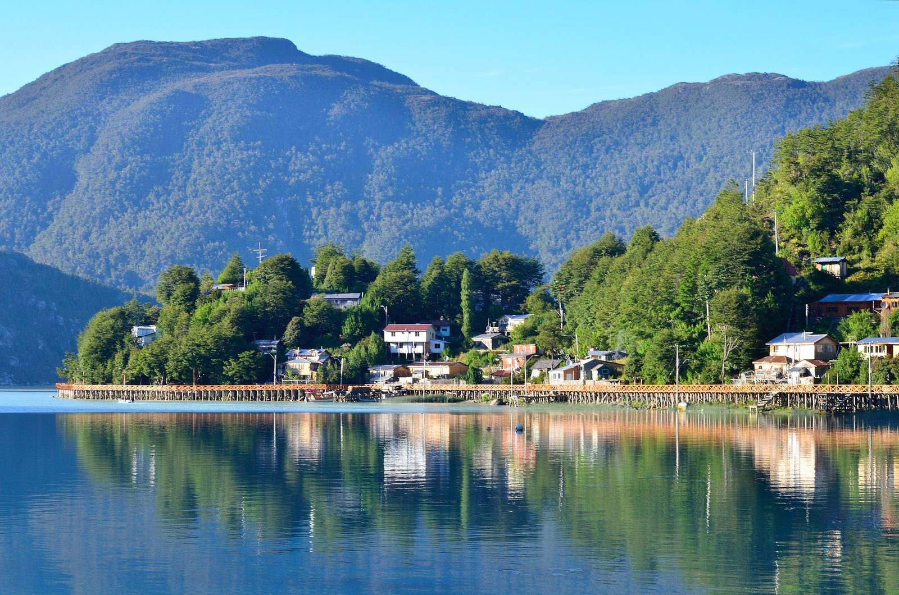
Caleta Tortel
~126 km · ~2h30 a 3 h
2 noites · dias 5 e 6
Vilarejo sem ruas: o carro fica no estacionamento no alto e tudo se faz por ~7 km de passarelas de cipreste. Barcos para o Glaciar Steffen e a Isla de los Muertos.
7
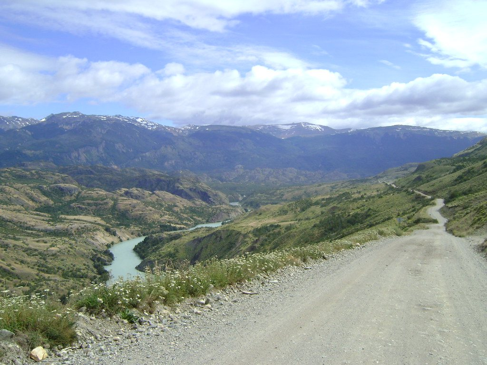
Puerto Bertrand
~172 km · ~3h30 a 4 h
1 noite · dia 7
Vilarejo minúsculo na saída do Lago Bertrand, onde nasce o Baker. Rafting ou caiaque opcional no rio.
8
Villa Cerro Castillo
~186 km · ~4 h
2 noites · dias 8 e 9
Volta pela margem do Lago General Carrera. No dia 9, a trilha da Laguna Cerro Castillo.
9
Balmaceda
~72 km · ~1 h
Volta · dia 10
Subida da Cuesta del Diablo, devolução do carro e voo para casa.
Noites: Cerro Castillo 1 · Río Tranquilo 2 · Cochrane 1 · Tortel 2 · Puerto Bertrand 1 · Cerro Castillo 2. É o roteiro com mais horas ao volante: dias 5, 7 e 8 têm de 2h30 a 4 h de rípio. No rípio, conte 20 a 30% a mais de tempo que o Google e saia cedo.
1
Balmaceda
Aeroporto
Chegada · dia 1 e dia 10
Retirada e devolução do carro. Vilarejo pequeno, só passagem.
2
Coyhaique
55 km · ~1 h
1 noite · dia 1
Maior cidade da região: sacar pesos, supermercado grande, chip de celular e tanque cheio antes de subir para o norte.
3
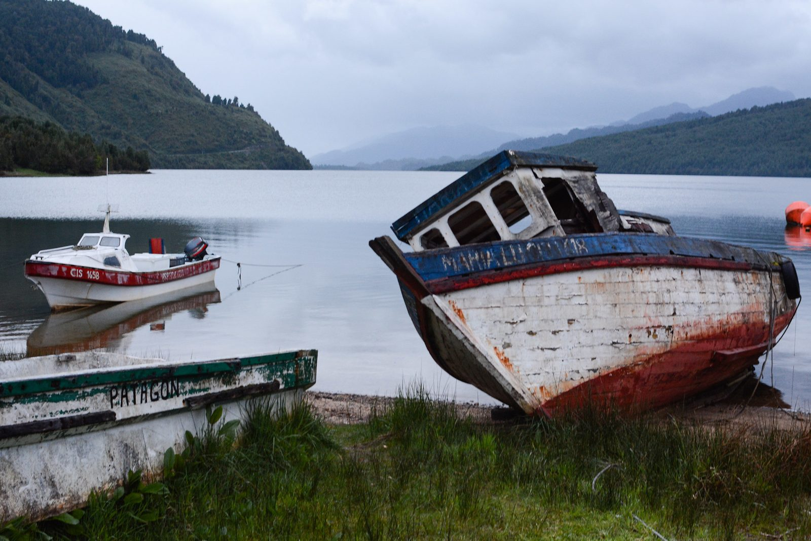
Puyuhuapi
~225 km · ~4 h
2 noites · dias 2 e 3
Vilarejo fundado por colonos alemães no fundo de um fiorde. Base para o Parque Nacional Queulat e para as termas.
4
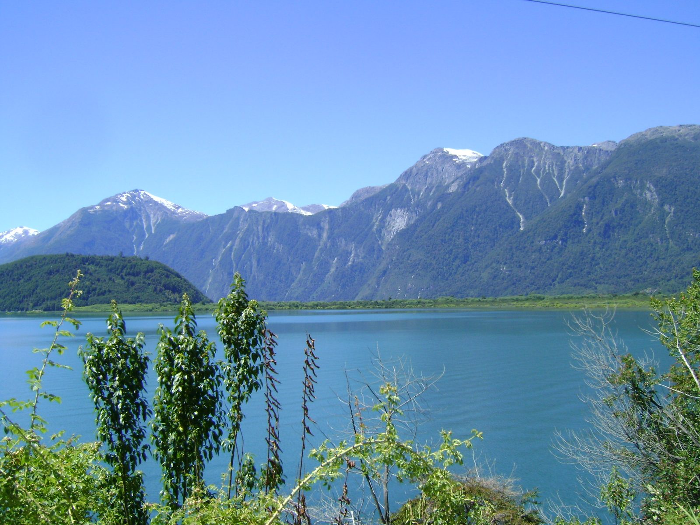
Villa Santa Lucía
~120 km · ~2h30
Passagem · dias 4 e 6
Cruzamento onde sai a estrada para Futaleufú, à beira do Lago Yelcho. Vilarejo reconstruído depois do deslizamento de 2017.
5
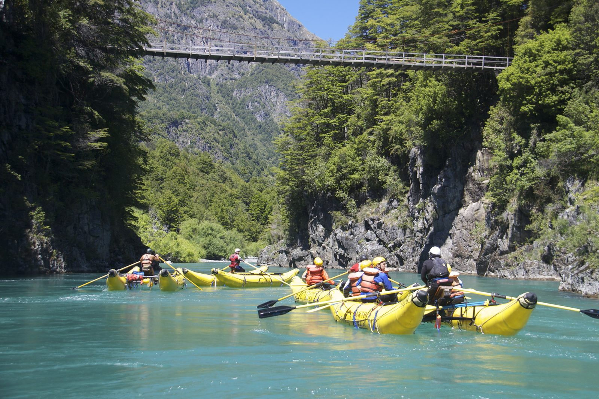
Futaleufú
~78 km · ~1h45
2 noites · dias 4 e 5
Capital do rafting no Chile, num vale perto da fronteira com a Argentina. O Lago Espolón fica a poucos minutos.
6
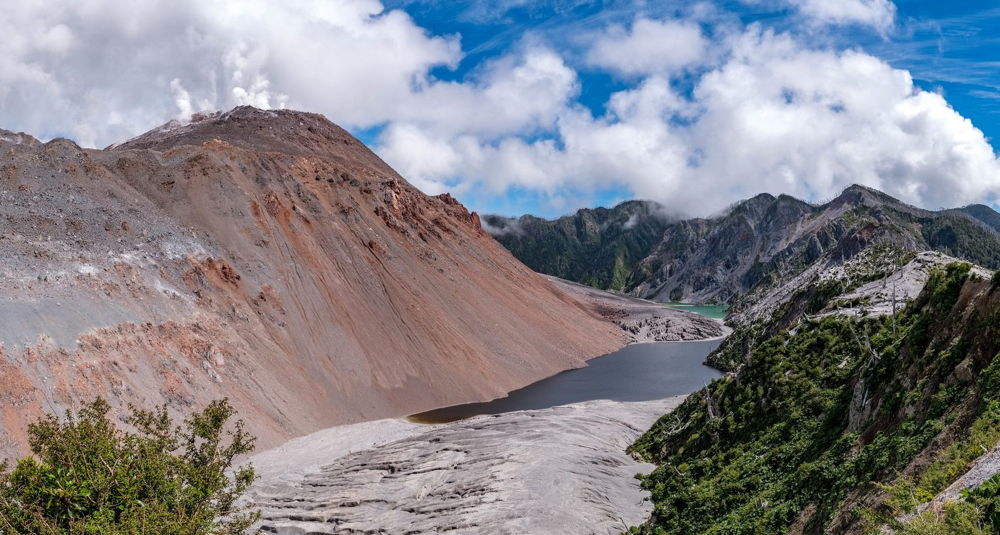
Chaitén
~155 km · ~3 h
1 noite · dia 6
Cidade reconstruída depois da erupção do vulcão em 2008. Porta de entrada do Parque Nacional Pumalín Douglas Tompkins.
7
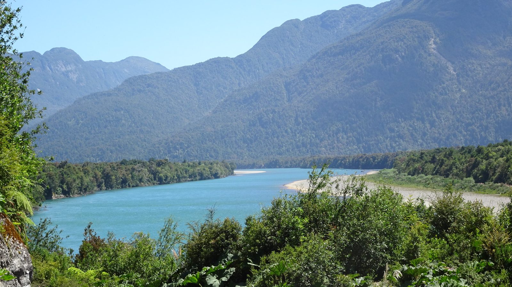
La Junta
~150 km · ~2h30
Passagem · dias 7 e 9
Encontro dos rios Palena e Rosselot. Último posto de combustível antes de Raúl Marín: encha o tanque nas duas passagens.
8
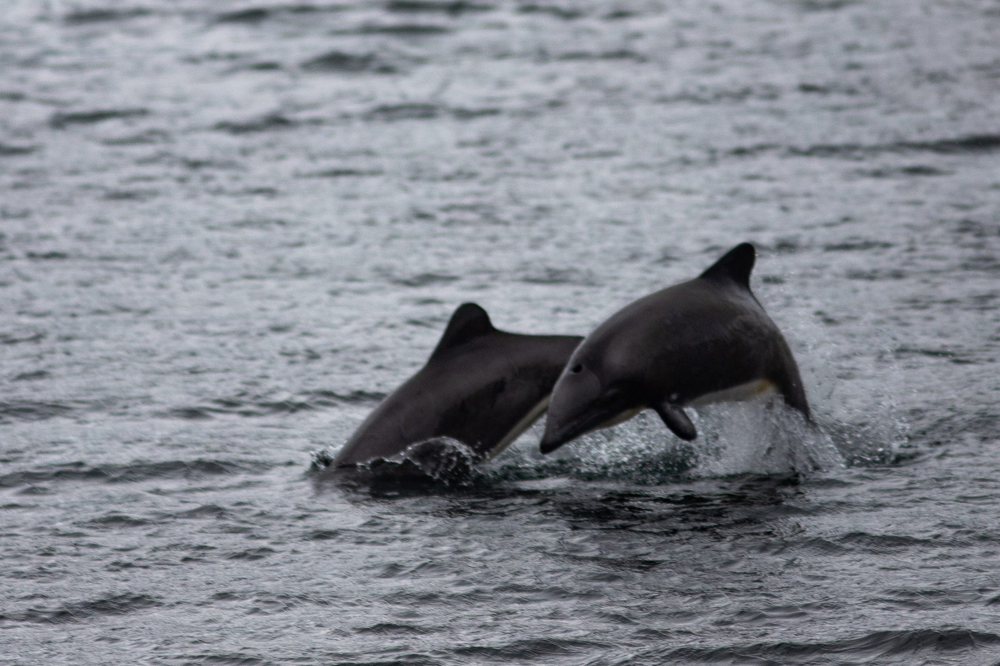
Raúl Marín Balmaceda
~74 km · ~1h30
2 noites · dias 7 e 8
Vilarejo de pescadores na foz do Palena, com praias, dunas e golfinhos na baía. Chega-se por rípio e uma barcaza gratuita de 10 minutos.
9
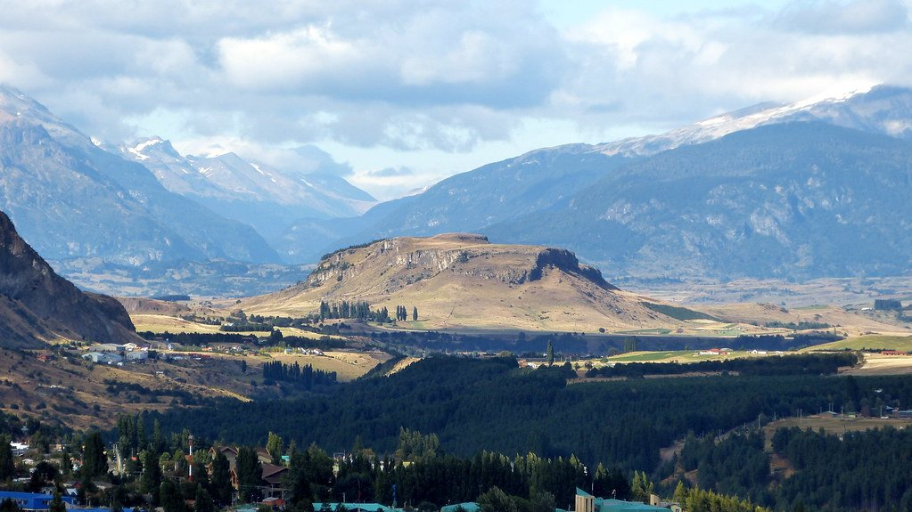
Coyhaique
~345 km · ~6h30
1 noite · dia 9
O dia mais longo de volante: rípio até La Junta e depois Ruta 7 quase toda asfaltada, passando de novo por Queulat.
10
Balmaceda
55 km · ~1 h
Volta · dia 10
Devolução do carro e voo para casa.
Noites: Coyhaique 1 · Puyuhuapi 2 · Futaleufú 2 · Chaitén 1 · Raúl Marín 2 · Coyhaique 1. Os dias 4, 7 e 9 são os mais longos de estrada; a barcaza do Palena cruza das 8h30 às 13h e das 14h às 18h30, então chegue cedo. No rípio, conte 20 a 30% a mais de tempo que o Google.
Onde dormir
Hospedagem,cidadeacidade
Três opções em cada parada, com link direto para reservar. Escolham a de cada cidade e o total por pessoa vai se somando lá embaixo; a calculadora de custos usa essas escolhas.
Coyhaique: Maior cidade da região: muita oferta e preços baixos. Para uma noite só, priorize apartamento central com estacionamento e saia cedo rumo ao sul. · dia 1
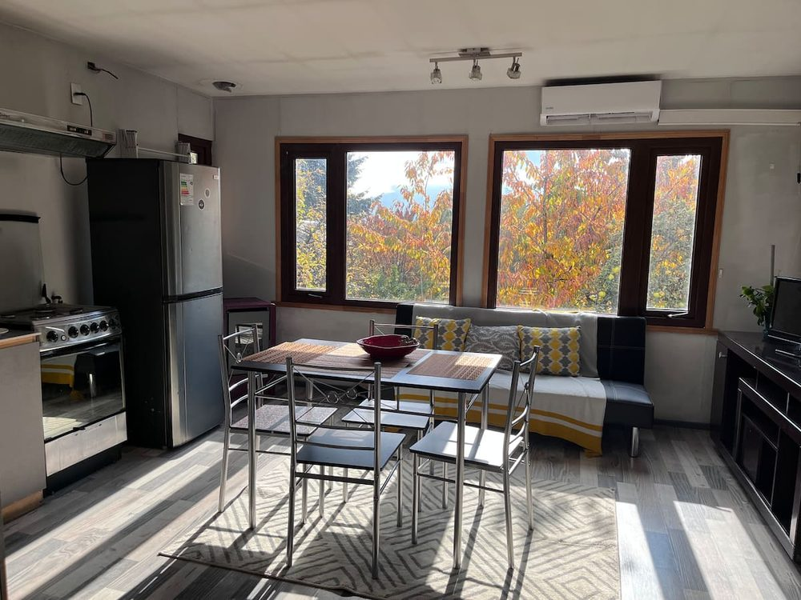
Escolha do MatheusAirbnb
Apartamento inteiro (2 quartos)★ 4,9 (105)
Tía Yeya
A que o Matheus escolheu: boa localização e o menor preço por pessoa da cidade.
2 quartos, 2 camas
Anfitriã Superhost, preferido dos hóspedes
Hóspedes elogiam a localização
Confirmar se uma das camas é de casal ou se há colchão extra para o terceiro · Estacionamento não informado no anúncio
R$ 105por pessoa · R$ 316 no total (01/mar → 02/mar)
Chile Chico: Cidade pequena e ensolarada à beira do Lago General Carrera. Há bastante cabana barata; reserve algo perto do lago/centro, pois a noite é curta. · dia 2
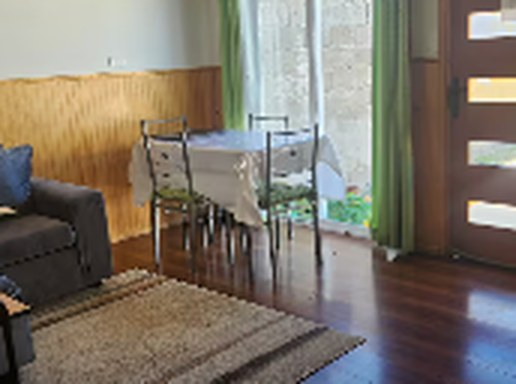
Escolha do MatheusAirbnb
Casa inteira (2 quartos)★ 4,73
Los Almendros
A que o Matheus escolheu: casa inteira no centro por cerca de R$ 100 por pessoa.
Casa central e tranquila
2 quartos, 2 camas
Perto do porto da balsa
Confirmar onde dorme o terceiro
R$ 103por pessoa · R$ 310 no total (02/mar → 03/mar)
Puerto Río Tranquilo: Vila minúscula (Capillas de Mármol, Glaciar Exploradores) e a mais disputada da rota: reservem primeiro aqui. Preços são os mais altos da viagem. · dias 5, 6 e 7
Escolha do MatheusAirbnb
Cabana inteira (2 quartos)★ 4,99
Cabana com vista para o lago Tranquilo
A que o Matheus escolheu: a única com 3 camas, e a vista é de cartão-postal.
3 camas em 2 quartos: cada um na sua
Janelão de frente para o lago
Nota 4,99, preferido dos hóspedes
O anúncio cita um vale: confirmar a distância até o vilarejo de Río Tranquilo
R$ 558por pessoa · R$ 1.673 no total (05/mar → 08/mar)
Villa Cerro Castillo: Vilarejo ao pé do Cerro Castillo; várias cabanas ficam na Ruta 7, a poucos km da vila. Com carro isso não é problema. · dias 8 e 9
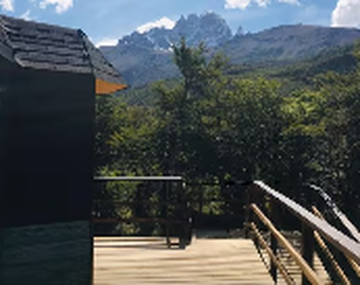
Escolha do MatheusAirbnb
Casa de cúpula (domo, 1 quarto)★ 4,73
Winkul Castillo Domo
A que o Matheus escolheu: acordar olhando para as torres do Cerro Castillo.
Domo com deck de frente para o Cerro Castillo
2 camas
Experiência diferente para fechar a viagem
1 quarto só: confirmar a cama do terceiro
R$ 287por pessoa · R$ 860 no total (08/mar → 10/mar)
Coyhaique: Maior cidade da região: muita oferta e preços baixos. Para uma noite só, priorize apartamento central com estacionamento e saia cedo rumo ao sul. · dia 1
Escolha do MatheusAirbnb
Apartamento inteiro (2 quartos)★ 4,9 (105)
Tía Yeya
A que o Matheus escolheu: boa localização e o menor preço por pessoa da cidade.
2 quartos, 2 camas
Anfitriã Superhost, preferido dos hóspedes
Hóspedes elogiam a localização
Confirmar se uma das camas é de casal ou se há colchão extra para o terceiro · Estacionamento não informado no anúncio
R$ 105por pessoa · R$ 316 no total (01/mar → 02/mar)
Villa Cerro Castillo: Vilarejo ao pé do Cerro Castillo; várias cabanas ficam na Ruta 7, a poucos km da vila. Com carro isso não é problema. · dias 2 e 3
Escolha do MatheusAirbnb
Casa de cúpula (domo, 1 quarto)★ 4,73
Winkul Castillo Domo
A que o Matheus escolheu: acordar olhando para as torres do Cerro Castillo.
Domo com deck de frente para o Cerro Castillo
2 camas
Experiência diferente para fechar a viagem
1 quarto só: confirmar a cama do terceiro
R$ 287por pessoa · R$ 860 no total (08/mar → 10/mar)
Puerto Río Tranquilo: Vila minúscula (Capillas de Mármol, Glaciar Exploradores) e a mais disputada da rota: reservem primeiro aqui. Preços são os mais altos da viagem. · dias 4, 5 e 6
Escolha do MatheusAirbnb
Cabana inteira (2 quartos)★ 4,99
Cabana com vista para o lago Tranquilo
A que o Matheus escolheu: a única com 3 camas, e a vista é de cartão-postal.
3 camas em 2 quartos: cada um na sua
Janelão de frente para o lago
Nota 4,99, preferido dos hóspedes
O anúncio cita um vale: confirmar a distância até o vilarejo de Río Tranquilo
R$ 558por pessoa · R$ 1.673 no total (05/mar → 08/mar)
Villa Cerro Castillo: Vilarejo ao pé do Cerro Castillo; várias cabanas ficam na Ruta 7, a poucos km da vila. Com carro isso não é problema. · dia 9 Preços ajustados de 2 para 1 noite; as datas reais deste roteiro podem mudar o valor.
Escolha do MatheusAirbnb
Casa de cúpula (domo, 1 quarto)★ 4,73
Winkul Castillo Domo
A que o Matheus escolheu: acordar olhando para as torres do Cerro Castillo.
Villa Cerro Castillo: Vilarejo ao pé do Cerro Castillo; várias cabanas ficam na Ruta 7, a poucos km da vila. Com carro isso não é problema. · dia 1 Preços ajustados de 2 para 1 noite; as datas reais deste roteiro podem mudar o valor.
Escolha do MatheusAirbnb
Casa de cúpula (domo, 1 quarto)★ 4,73
Winkul Castillo Domo
A que o Matheus escolheu: acordar olhando para as torres do Cerro Castillo.
Puerto Río Tranquilo: Vila minúscula (Capillas de Mármol, Glaciar Exploradores) e a mais disputada da rota: reservem primeiro aqui. Preços são os mais altos da viagem. · dias 2 e 3 Preços ajustados de 3 para 2 noites; as datas reais deste roteiro podem mudar o valor.
Escolha do MatheusAirbnb
Cabana inteira (2 quartos)★ 4,99
Cabana com vista para o lago Tranquilo
A que o Matheus escolheu: a única com 3 camas, e a vista é de cartão-postal.
3 camas em 2 quartos: cada um na sua
Janelão de frente para o lago
Nota 4,99, preferido dos hóspedes
O anúncio cita um vale: confirmar a distância até o vilarejo de Río Tranquilo
Cochrane: Base para o Parque Nacional Patagônia e o rio Baker. Opções boas acabam cedo; cabanas próximas ao rio são as mais charmosas. · dia 4 Preços ajustados de 2 para 1 noite; as datas reais deste roteiro podem mudar o valor.
Escolha do MatheusAirbnb
Apartamento inteiro (1 quarto)★ 4,88
Departamento Huemul
A que o Matheus escolheu: anunciado para até 3 hóspedes.
Caleta Tortel: Vila sem ruas, só passarelas de madeira e escadas: o carro fica no estacionamento público do alto da vila. Escolham hospedagem a poucos minutos a pé dele — carregar mala por escadas é cansativo. · dias 5 e 6
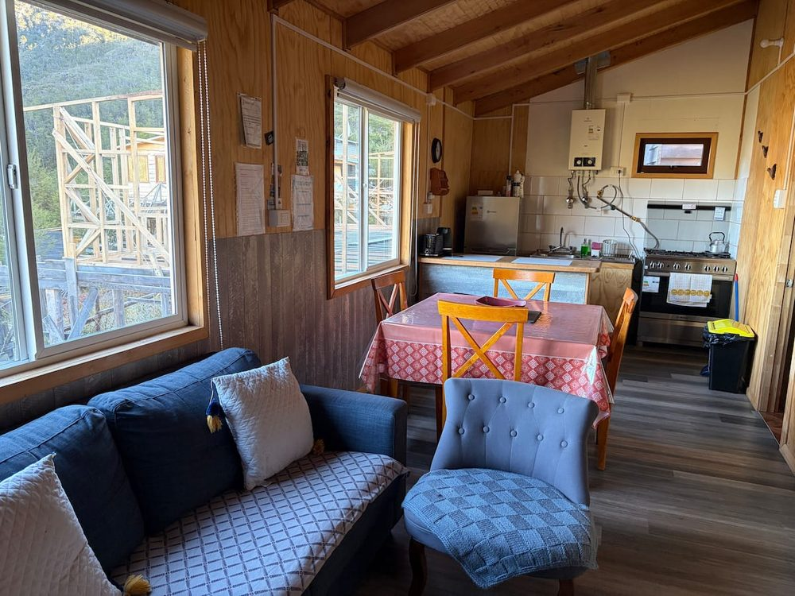
Nossa escolhaAirbnb
Cabana inteira (2 quartos, 4 camas)★ 4,96 (92)
Cabaña Ámbar (cabana âmbar)
Melhor nota da vila, quartos separados e mala a 3 minutos do carro.
A menos de 3 min a pé do estacionamento público
2 quartos: casal + 3 de solteiro; vista para a baía
Top 10% do Airbnb, Superhost, emite nota fiscal
Aquecimento a lenha: manter o fogão aceso é com vocês · Cancelamento grátis só até 03/02/2027
Puerto Bertrand: Vilarejo minúsculo onde o Lago Bertrand vira o rio Baker. Quase só há cabanas simples no povoado e lodges caros nos arredores; para uma noite, cabana no centro basta. · dia 7
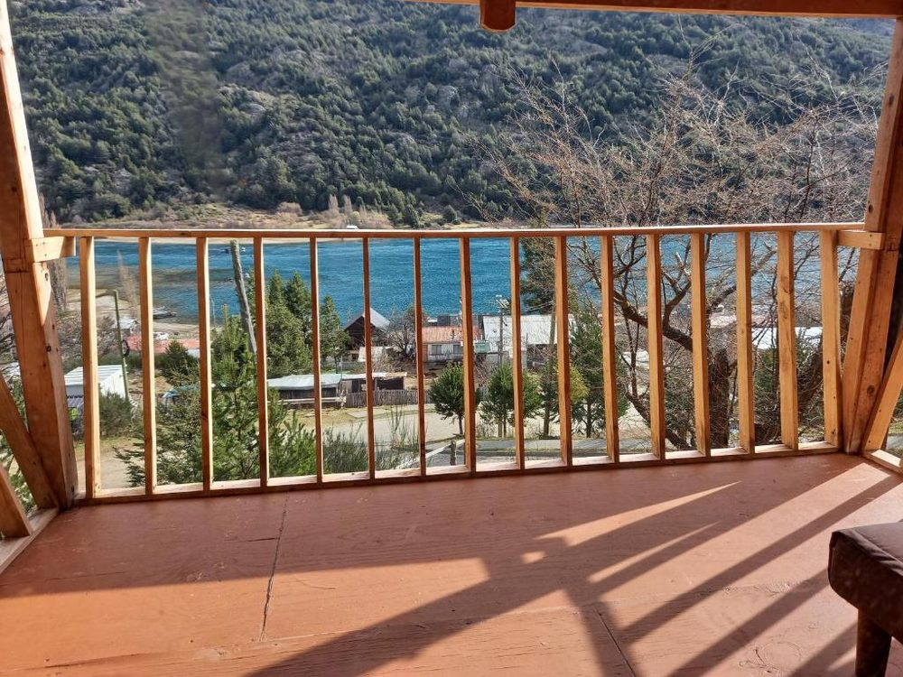
Nossa escolhaBooking.com
Casa inteira (3 quartos, 4 camas)★ 9,0/10 (35)
Bona Vista
Quartos separados, estacionamento e boa nota no Booking por preço médio.
3 quartos — cada um no seu
100 m do centro; estacionamento grátis no local
Nota 9,0/10 no Booking (35 avaliações)
No Airbnb a mesma casa tem 4,26 com queixas de recepção — combinar horário de chegada · Banheiro único
R$ 175por pessoa · US$ 94 por 1 noite (valor da busca no Booking; no Airbnb sai US$ 109)
Villa Cerro Castillo: Vilarejo ao pé do Cerro Castillo; várias cabanas ficam na Ruta 7, a poucos km da vila. Com carro isso não é problema. · dias 8 e 9
Escolha do MatheusAirbnb
Casa de cúpula (domo, 1 quarto)★ 4,73
Winkul Castillo Domo
A que o Matheus escolheu: acordar olhando para as torres do Cerro Castillo.
Domo com deck de frente para o Cerro Castillo
2 camas
Experiência diferente para fechar a viagem
1 quarto só: confirmar a cama do terceiro
R$ 287por pessoa · R$ 860 no total (08/mar → 10/mar)
Coyhaique: Maior cidade da região: muita oferta e preços baixos. Para uma noite só, priorize apartamento central com estacionamento e saia cedo rumo ao sul. · dia 1
Escolha do MatheusAirbnb
Apartamento inteiro (2 quartos)★ 4,9 (105)
Tía Yeya
A que o Matheus escolheu: boa localização e o menor preço por pessoa da cidade.
2 quartos, 2 camas
Anfitriã Superhost, preferido dos hóspedes
Hóspedes elogiam a localização
Confirmar se uma das camas é de casal ou se há colchão extra para o terceiro · Estacionamento não informado no anúncio
R$ 105por pessoa · R$ 316 no total (01/mar → 02/mar)
Puyuhuapi: Vilarejo à beira do fiorde, base para o Ventisquero Colgante (PN Queulat) e as termas. Oferta pequena e disputada: as cabanas com 2 quartos somem primeiro. · dias 2 e 3
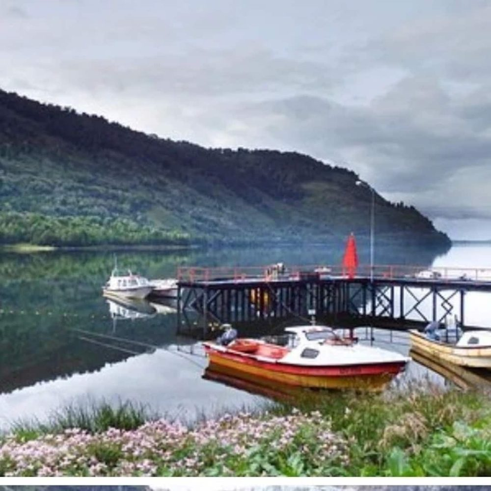
Nossa escolhaAirbnb
Cabana inteira (2 quartos, 6 camas)★ 4,84 (87)
Cabanas Mateo 01
Cada um no seu quarto, estacionamento garantido e anfitrião experiente, por ~R$ 200 por pessoa/noite.
2 quartos: casal + 2 solteiro / 3 de solteiro
Estacionamento grátis no local
Lareira, banheira e Wi-Fi; anfitrião Superhost há 9 anos
Cabana para até 7 pessoas — sobra espaço · 1 banheiro só
Futaleufú: Capital do rafting no rio Futaleufú (região de Los Lagos). Cidade pequena e plana: tudo a pé a partir da praça; cabanas "rurais" ficam a poucos minutos de carro. · dias 4 e 5
Nossa escolhaAirbnb
Cabana inteira (2 quartos, 3 camas)★ 4,92 (38)
Cabana rústica em Futaleufú
Quartos separados, nota alta e vista bonita, por ~R$ 180 por pessoa/noite.
2 quartos: casal + 2 de solteiro
Vista para a Laguna Espejo e o vilarejo
Top 10% do Airbnb, anfitrião Superhost
Fica a poucos minutos (de carro) do centro · Estacionamento não informado; cancelamento grátis só até 18/02
R$ 243por pessoa · US$ 130 por 2 noites (taxas incluídas; promoção, preço normal US$ 148)
Chaitén: Cidade reconstruída após a erupção de 2008 e porta de entrada do Parque Pumalín. Para uma noite, fique no centro ou perto dele e abasteça antes de seguir. · dia 6
Nossa escolhaAirbnb
Cabana inteira (2 quartos, 4 camas)★ 5,0 (29)
Cabana Refugio de los Papos
Cada um no seu quarto, nota máxima e perto do centro.
2 quartos com camas de solteiro
Estacionamento grátis; vista da cidade e do mar
Top 5% do Airbnb, anfitriã Superhost
Fica numa colina perto do centro (subida curta) · Anfitriã com menos de 1 ano na plataforma
Raúl Marín Balmaceda: Vila isolada no delta do rio Palena, ao fim de ~75 km de rípio desde La Junta (a chegada inclui uma travessia curta de balsa — confirmar horário). Energia elétrica só das 7h à 1h e celular só Entel. Pouquíssima oferta: reserve já. · dias 7 e 8
Nossa escolhaBooking.com
Casa inteira (3 quartos, 6 camas)★ 9,0/10 (5)
Cabaña en selva patagónica, cerca del pueblo
Cada um com sua cama de casal e o melhor preço da vila.
3 quartos — dois com cama de casal + loft
Nota 9,0/10 no Booking; cancelamento grátis e pagamento no local
Casa nova, isolada, com terraço e banheira
Poucas avaliações (5 no Booking; 4,25 com 4 no Airbnb) · Carro fica na última rua: ~100 m de trilha a pé com as malas; 15 min a pé da praia
R$ 209por pessoa · US$ 112 por 2 noites (valor da busca no Booking; mesma casa no Airbnb sai US$ 149)
Coyhaique: Maior cidade da região: muita oferta e preços baixos. Para uma noite só, priorize apartamento central com estacionamento e saia cedo rumo ao sul. · dia 9
Escolha do MatheusAirbnb
Apartamento inteiro (2 quartos)★ 4,9 (105)
Tía Yeya
A que o Matheus escolheu: boa localização e o menor preço por pessoa da cidade.
2 quartos, 2 camas
Anfitriã Superhost, preferido dos hóspedes
Hóspedes elogiam a localização
Confirmar se uma das camas é de casal ou se há colchão extra para o terceiro · Estacionamento não informado no anúncio
R$ 105por pessoa · R$ 316 no total (01/mar → 02/mar)
As escolhas do Matheus (26/10/2026) somam R$ 3.809 por 9 noites, ≈ R$ 1.270 por pessoa a três. Valores do Airbnb dele; confirmem com cada anfitrião que o preço vale para 3 hóspedes, porque as outras opções foram cotadas para 2.
Preços consultados no Airbnb em 16/10/2026 já para as datas exatas de março/2027, em dólares (US$) e com taxas incluídas; podem mudar até a reserva.
Conversão: US$ 1 = R$ 5,60 (aproximado). Preço por pessoa = total ÷ número de pessoas da calculadora (padrão 3).
Quase todas têm cancelamento grátis até 1–5 dias antes — dá para reservar já e decidir depois.
Puerto Río Tranquilo e Villa Cerro Castillo têm pouca oferta: reservem essas primeiro.
Itens marcados como 'não informado' (estacionamento, tipo de cama) devem ser confirmados com o anfitrião antes de pagar.
Preços consultados no Airbnb e no Booking.com em 16/10/2026 já para as datas exatas de março/2027, em dólares (US$); no Airbnb com taxas incluídas, no Booking é o valor exibido na busca. Podem mudar até a reserva.
Notas do Airbnb vão de 0 a 5; as opções com fonte 'Booking.com' trazem nota de 0 a 10 (campo nota_escala = 10).
Quase todas têm cancelamento grátis até 1–5 dias antes; exceções: Caleta Tortel (só até 03/02/2027) e a Cabaña rústica de Futaleufú (até 18/02).
Raúl Marín Balmaceda, Caleta Tortel e Puerto Bertrand têm pouquíssima oferta: reservem essas primeiro. Em Raúl Marín a luz é cortada à noite (1h–7h).
Para quem ama dirigir
Aestradaéodestino
7 trechos para ir devagar, de janela aberta. Cada um abre no Google Maps: arraste o bonequinho amarelo para a estrada e veja o Street View antes de ir.
A descida em zigue-zague para o vale do Río Ibáñez, com as torres do Cerro Castillo de um lado e o vale inteiro aberto à frente. No dia 10 vocês sobem por ela; pare no mirador do alto antes de seguir para Balmaceda.
Estrada escavada na rocha, pendurada sobre o lago, com curvas cegas e nenhuma proteção em vários pontos. É o trecho mais cênico e o que mais pede atenção. Devagar, buzine antes das curvas fechadas.
6 trechos para ir devagar, de janela aberta. Cada um abre no Google Maps: arraste o bonequinho amarelo para a estrada e veja o Street View antes de ir.
Ruta 7 · chegada a Villa Cerro Castillo · dias 2 e 10
Curvas em zigue-zague descendo para o vale do Río Ibáñez, com as torres do Cerro Castillo à frente. No dia 2 vocês descem com a vista inteira aberta; no dia 10 sobem e se despedem dela pelo retrovisor.
Ruta 7 · entre Cerro Castillo e Río Tranquilo · dias 4 e 9
Subidas e descidas pela margem norte do lago, com a água azul e as ilhas aparecendo a cada curva. Na ida o lago surge pela frente; na volta, no fim da tarde, a luz bate de outro lado.
A estrada corre no alto do cânion, com o rio turquesa lá embaixo e quase nenhum carro. Um dos melhores trechos de toda a Carretera, e vocês passam por ele duas vezes.
7 trechos para ir devagar, de janela aberta. Cada um abre no Google Maps: arraste o bonequinho amarelo para a estrada e veja o Street View antes de ir.
Ruta 7 · chegando a Villa Cerro Castillo · dias 1 e 10
Logo no primeiro dia, a descida em zigue-zague para o vale do Río Ibáñez, com as torres do Cerro Castillo à frente. No dia 10 vocês sobem por ela; pare no mirador do alto para a última foto.
A estrada corre no alto do cânion, com o rio turquesa lá embaixo e quase nenhum carro. Um dos melhores trechos de toda a Carretera, e vocês passam por ele duas vezes.
Mais de 100 km de rípio quase vazio entre montanhas nevadas, rios e floresta, com o Baker indo e voltando ao lado da estrada. Poeira no sol, lama na chuva: farol aceso e distância de quem vem atrás.
X-904 · cruce de Tortel → Caleta Tortel · dias 5 e 7
Os últimos ~23 km, abertos só em 2003, seguem o Baker até a foz, com o delta se abrindo em canais verdes entre as montanhas. A estrada termina num estacionamento no alto do morro: dali em diante, só a pé.
Ruta 7 · cruce de Tortel → Puerto Yungay · dia 5 (opcional)
Cerca de 20 km de rípio estreito pela floresta até o embarcadouro da balsa para Río Bravo, onde a Carretera continua rumo a Villa O'Higgins. Estrada sem saída para o carro: é ir, ver o fiorde e voltar.
6 trechos para ir devagar, de janela aberta. Cada um abre no Google Maps: arraste o bonequinho amarelo para a estrada e veja o Street View antes de ir.
Ruta 240 e Ruta 7 · Coyhaique → Villa Mañihuales · dia 2
Logo na saída de Coyhaique a estrada desce colada ao Río Simpson, entre paredões de rocha e cachoeiras como o Velo de la Novia. Asfalto bom e curvas largas para começar o dia sem pressa.
Ruta 7 · entre Villa Amengual e Puyuhuapi · dias 2 e 9
A subida em zigue-zague pela Cuesta Queulat atravessa a floresta úmida com cachoeiras caindo ao lado da pista e picos nevados no alto. Parte já está asfaltada e o resto segue em obras; pare no Salto Padre García na descida.
Ruta 231 · Villa Santa Lucía → Futaleufú · dias 4 e 6
Rípio pela beira de um lago azul cercado de montanhas e geleiras, com pouquíssimo tráfego. Tem miradores naturais a cada curva; vale ir devagar para aproveitar.
Nos últimos quilômetros a estrada acompanha o rio Futaleufú, de um azul quase irreal, correndo entre paredes de granito e corredeiras brancas. Pare nas pontes para ver o rio de cima.
A estrada cruza o Parque Pumalín com o vulcão Michinmahuida coberto de gelo ao fundo e floresta virgem dos dois lados. Trecho tranquilo, com placas de madeira do parque e áreas para parar.
Setenta e poucos quilômetros de rípio estreito, sempre colado ao rio largo e verde, com cachoeiras e floresta fechada. No fim, a barcaza gratuita leva o carro até o vilarejo na beira do mar.
Curvas em zigue-zague: a Cuesta del Diablo, perto de Cerro CastilloAssim é o rípio: cascalho solto, que levanta pedra e derrapa
Asfalto e rípio, trecho a trecho
Asfalto · ~245 km
Rípio · ~420 km
Balmaceda → CoyhaiqueRuta 7, asfalto
55 km
Coyhaique → Puerto IbáñezAsfalto até o porto
115 km
Puerto Ibáñez → Chile ChicoBalsa pelo lago
2 h
Chile Chico → Puerto GuadalRuta 265, rípio e trechos de cornija
120 km
Puerto Guadal → CochraneRuta 7, rípio
70 km
Cochrane → Puerto BertrandRuta 7, rípio
50 km
Puerto Bertrand → Río TranquiloRuta 7, rípio na beira do lago
65 km
Río Tranquilo → Cerro CastilloRípio até a Laguna Verde; obras de asfalto em andamento
125 km
Cerro Castillo → BalmacedaAsfalto
65 km
Km aproximados. Desvios de carro opcionais: Valle Exploradores (ida e volta) (~150 km); Valle Chacabuco (ida e volta) (~40 km). Com eles, o total fica perto de 850 km. O asfalto avança a cada ano, então em 2027 pode haver mais trechos asfaltados e alguns desvios de obra.
Asfalto · ~235 km
Rípio · ~465 km
Balmaceda → CoyhaiqueRuta 7, asfalto
55 km
Coyhaique → Villa Cerro CastilloRuta 7, asfalto, com a Cuesta del Diablo no fim
95 km
Villa Cerro Castillo → Río TranquiloRuta 7, rípio; obras de asfalto em andamento ao sul de Cerro Castillo
125 km
Río Tranquilo → Puerto BertrandRuta 7, rípio na beira do lago
65 km
Puerto Bertrand → CochraneRuta 7, rípio no alto do vale do Baker
50 km
Cochrane → Villa Cerro CastilloRuta 7 de volta, rípio quase todo
245 km
Villa Cerro Castillo → BalmacedaAsfalto
65 km
Km aproximados. Desvios de carro opcionais: Valle Exploradores até o Glaciar (ida e volta) (~105 km); Valle Chacabuco, Parque Nacional Patagonia (ida e volta) (~60 km); Setor Tamango (ida e volta) (~10 km). Com eles, o total fica perto de 880 km. O asfalto avança a cada ano, então em 2027 pode haver mais trechos asfaltados e alguns desvios de obra.
Asfalto · ~194 km
Rípio · ~669 km
Balmaceda → Villa Cerro CastilloRuta 7, asfalto (Cuesta del Diablo)
72 km
Villa Cerro Castillo → Puerto Río TranquiloRuta 7; ~25 km asfaltados saindo de Cerro Castillo (obras em andamento), depois rípio
120 km
Puerto Río Tranquilo → Puerto BertrandRuta 7, rípio na beira do lago
67 km
Puerto Bertrand → CochraneRuta 7, rípio no alto do vale do Baker
48 km
Cochrane → Caleta TortelRuta 7 até o cruce de Tortel e depois a X-904 (~23 km), tudo rípio
126 km
Caleta Tortel → Puerto BertrandX-904 e Ruta 7, rípio, passando de novo por Cochrane
172 km
Puerto Bertrand → Villa Cerro CastilloRuta 7, rípio pela margem norte do lago; asfalto só perto de Cerro Castillo
186 km
Villa Cerro Castillo → BalmacedaRuta 7, asfalto
72 km
Km aproximados. Desvios de carro opcionais: Puerto Yungay (ida e volta desde o cruce da X-904) (~40 km); Valle Exploradores (ida e volta, dia 3) (~150 km). Com eles, o total fica perto de 1050 km. O asfalto avança a cada ano, então em 2027 pode haver mais trechos asfaltados e alguns desvios de obra.
Asfalto · ~875 km
Rípio · ~380 km
Balmaceda → CoyhaiqueRuta 7, asfalto
55 km
Coyhaique → PuyuhuapiRuta 240 e Ruta 7, asfalto; rípio e obras na Cuesta Queulat
225 km
Puyuhuapi → Villa Santa LucíaRuta 7 via La Junta, quase toda asfaltada
120 km
Villa Santa Lucía → FutaleufúRuta 231 pela margem do Lago Yelcho, rípio
78 km
Futaleufú → Villa Santa LucíaRuta 231, mesmo caminho da ida
78 km
Villa Santa Lucía → ChaiténRuta 7, asfalto com trechos de rípio na zona do deslizamento
75 km
Chaitén → La JuntaRuta 7, mesmo caminho do dia 4 depois de Santa Lucía
150 km
La Junta → Raúl Marín BalmacedaRípio ao longo do Río Palena, com barcaza gratuita no fim
74 km
Raúl Marín Balmaceda → CoyhaiqueRípio até La Junta, depois Ruta 7 quase toda asfaltada
345 km
Coyhaique → BalmacedaAsfalto
55 km
Km aproximados. Desvios de carro opcionais: Pumalín norte: Volcán Chaitén e Sendero Los Alerces (ida e volta desde Chaitén) (~110 km); Setor Ventisquero Colgante e Termas (Puyuhuapi, ida e volta) (~60 km); Lago Espolón (ida e volta desde Futaleufú) (~15 km). Com eles, o total fica perto de 1440 km. O asfalto avança a cada ano, então em 2027 pode haver mais trechos asfaltados e alguns desvios de obra.
Velocidade no rípio40 a 60 km/h; nas curvas e costelas de vaca, menos. Faróis acesos sempre.
Pedras e para-brisaAo cruzar outro carro, reduza e encoste à direita. Pedra trinca vidro e o seguro costuma não cobrir.
CombustívelEncha o tanque sempre que passar por uma cidade com posto. Entre elas os postos são raros, e alguns vilarejos não têm nenhum.
Na garagem
QualcarroalugaremBalmaceda
Modelos que as locadoras do aeroporto oferecem, avaliados para esta rota: muito rípio, pedra solta, vento, balsa e três pessoas com mala. Toque em cada carro para ver os detalhes.
Só o Matheus dirige
Com um motorista só, de 23 anos, Europcar, Econorent e Budget/Avis servem. A Budget/Avis aceita a partir de 22 anos completos, caso alguém queira revezar o volante; Europcar e Econorent só a partir de 23. Mitta e Montino precisam ser confirmadas antes. Os preços abaixo foram cotados na Europcar. Com três pessoas e malas, prefiram um SUV médio (Tucson, RAV4 ou Crosstrek): no Sonet a bagagem não cabe com folga.
Tucson
9nota para esta rota
SUV médio4x4 automático sob demanda (AWD com bloqueio)
Hyundai Tucson 2.0 CRDi 4x4 AT (diesel)
Melhor equilíbrio entre segurança, conforto, autonomia e preço para a volta completa.
Altura do solo180 mm
Consumo≈ 7,5–9 L/100 km diesel no rípio (estimado)
Porta-malas≈ 540–620 L (estimado)
Nota para a rota9/10
DiáriaCLP 73.70710 diasR$ 3.780≈ R$ 1.890 por pessoa
Prós
Diesel dá bastante autonomia: postos são raros entre Cochrane, Río Tranquilo e Chile Chico
Tração 4x4 automática ajuda no rípio solto, nas curvas da Ruta 265 e na subida de Cerro Castillo
Porta-malas fechado e grande: bagagem protegida do pó e da chuva
Câmbio automático e conforto para dias longos de estrada de terra
Contras
Altura (~180 mm) é a menor entre as opções 4x4; é preciso cuidado nos buracos do Valle Exploradores
Pneus de rua (não AT) furam mais com pedras de rípio
Na Europcar só o motorista de 23 anos pode dirigir
Carroceria grande e alta sofre com o vento lateral forte perto do Lago General Carrera
Disponibilidade e preço na Europcar Balmaceda conferidos em cotação online (02/03/2027, diária de 1 dia). Altura, consumo e porta-malas são estimativas.
Preço real para 02-12/03/2027 cotado na API de reservas da Montino (motorista de 30 anos); a regra de idade está nos termos da Montino. Ficha técnica estimada.
Sonet
6nota para esta rota
SUV compacto (crossover)4x2 (tração dianteira)
Kia Sonet 1.5 AT
Funciona no verão com direção cuidadosa e é o mais barato, mas deixa pouca margem de segurança.
Altura do solo205 mm
Consumo≈ 7–8 L/100 km gasolina (estimado)
Porta-malas≈ 390 L (estimado)
Nota para a rota6/10
DiáriaCLP 43.50310 diasR$ 2.231≈ R$ 1.116 por pessoa
Prós
De longe o mais barato disponível em Balmaceda
Boa altura para um compacto e econômico
Porta-malas razoável para 2 pessoas
Automático e fácil de dirigir e estacionar na balsa
Contras
Tração 4x2 e pneus pequenos: mais risco de atolar ou derrapar no rípio solto e com chuva
Suspensão e proteção do cárter frágeis para os buracos do Valle Exploradores
Na Mitta, carros das categorias B e C ficam sem cobertura CDW fora do asfalto na Carretera Austral (confirmar se o C3 entra nisso)
Na Europcar só o motorista de 23 anos pode dirigir
Idade: com 22 e 23 anos, a Budget/Avis (mínimo de 22 anos completos) é a única grande locadora verificada que aceita os dois. Europcar e Econorent aceitam só a partir de 23 (o de 22 fica de fora). Mitta diz 'mayor de 22' (confirmar). Montino pede 25, com exceção de 21 a 24 mediante Seguro Chofer Joven (pedir por WhatsApp).
Balsa Puerto Ibáñez–Chile Chico: nenhum contrato consultado proíbe ou autoriza a travessia de forma explícita. Peça a autorização por escrito (e-mail) na reserva e leve o documento.
Deduzível é alto em Aysén: UF 20+IVA (Mitta, Montino) ou UF 30+IVA na XI Região (Europcar), ou seja, cerca de R$ 4.500 a 6.500. Avalie uma cobertura extra ou um seguro de deduzível externo.
Para-brisa e pneus quase nunca entram na cobertura básica, e são os danos mais comuns no rípio. Contrate o adicional (Montino CLP 25.000/dia; Budget 'PYN') ou mantenha distância de caminhões.
Antes de sair, confira o estepe (de tamanho normal, calibrado), o macaco e a chave de roda, e fotografe e filme o carro inteiro, incluindo o para-brisa.
Caução: só cartão de crédito no nome do titular. Contem com CLP 500.000 a 1.500.000 bloqueados (em pick-ups 4x4 a Europcar exige cartão Platinum/Black).
Abasteça em toda oportunidade: Coyhaique, Puerto Ibáñez, Chile Chico, Cochrane e Río Tranquilo (este às vezes fica sem combustível). Diesel dá mais autonomia.
No rípio, dirija a 50–70 km/h, sem frear forte nas curvas e com o farol aceso. Calibre os pneus conforme o manual (não esvazie sem orientação da locadora).
Reserve com 3 a 4 meses de antecedência: março ainda é alta temporada (dez–mar) e a frota de 4x4 em Balmaceda é pequena.
Carteira brasileira vale no Chile como turista, junto com o passaporte. Levar a Permissão Internacional para Dirigir (PID) é recomendado.
Não atravessem para a Argentina (Los Antiguos) sem a permissão da locadora: custa CLP 129.000+IVA (Europcar) a 250.000+IVA (Hertz) e exige alguns dias de antecedência.
Puerto Ibáñez → Chile Chico, com o carro a bordo e montanhas nevadas dos dois lados. É o atalho até a Ruta 265.
$21.270≈ R$ 109carro até 5,5 m
$2.510≈ R$ 13por adulto
$28.800≈ R$ 148carro + 3 pessoas
Pesos chilenos, só ida, tabela de 2026. Reais pelo câmbio de 16/out/2026 (R$ 1 ≈ CLP 195).
Saídas de Puerto Ibáñez (temporada alta 2025–26)
Seg12:00 · 20:00
Ter12:00* · 20:00
Qua12:00 · 20:00
Quisó 20:00
Sex12:00 · 20:00
Sáb12:00 · 19:00
Dom12:00 · 19:00
* Terça ao meio-dia é viagem de carga perigosa, que costuma restringir passageiros. Março de 2027 começa numa segunda: se o dia 2 cair numa terça ou quinta, ajuste a data.
Reserve cedoDe novembro a março as vagas de carro esgotam.
Chegue 2 h antesCom o carro. Passageiros, 1 h. Informe as medidas exatas do carro.
Avise a locadoraConfirme que o contrato permite balsa.
Os dias ainda são longos, o movimento cai depois de fevereiro e o tempo muda rápido: dá para ter sol, chuva e vento forte no mesmo dia.
Neste roteiro: Início de março é o fim do verão em Aysén: dias de ~8 a 18 °C, noites frias perto de 3 a 5 °C e pancadas de chuva possíveis em qualquer dia, mais em Coyhaique e Cerro Castillo. Mais ao sul, em Río Tranquilo e Cochrane, costuma ser mais seco, mas o vento forte da tarde no Lago General Carrera pode cancelar os barcos.
Neste roteiro: Em Tortel chove muito, mesmo no verão: conte com garoa ou chuva em boa parte dos dias, 8 a 16 °C e passarelas molhadas e escorregadias. Mais ao norte, em Río Tranquilo e Cerro Castillo, o tempo é mais seco, mas o vento forte da tarde pode cancelar barcos e deixar a trilha gelada no alto.
Neste roteiro: Este é o lado do Pacífico: em Queulat, Puyuhuapi, Chaitén e Raúl Marín chove em boa parte dos dias mesmo no verão, com 8 a 17 °C e neblina nas montanhas. Futaleufú, atrás da cordilheira, costuma ser mais seco e quente (até 20 a 25 °C à tarde).
13–16 °Cmáxima média em Coyhaique
4–5 °Cmínima de madrugada
~13 hde luz por dia
UTC-3mesmo horário de Brasília
☀ 07:2520:42 ☾0h6h12h18h
Nascer e pôr do sol em 1º de março perto de Coyhaique. Até o dia 10, ~07:40 e ~20:25.
Os Andes dividem o clima ao meio
Oeste · lado do PacíficoValle Exploradores, Queulat, Puyuhuapi, Chaitén e Tortel recebem o ar úmido do mar e chovem muito, até no verão. Leve capa de chuva mesmo com previsão boa.
Centro · lago e montanhasCoyhaique, Cerro Castillo e Río Tranquilo alternam sol e chuva. Na Laguna Cerro Castillo pode fazer perto de 0 °C e ventar forte.
Leste · Chile Chico e ChacabucoNa sombra de chuva dos Andes: seco e ensolarado. Chile Chico é a "cidade do sol" e tem até cerejeiras.
Como se vestir: em camadas. Camiseta térmica, fleece e jaqueta corta-vento impermeável resolvem quase tudo. Nas trilhas e no glaciar: gorro, luvas finas, protetor solar e óculos escuros.
Vegetação e paisagem
Trêsmundosemdezdias
A floresta úmida do lado do Pacífico, o bosque de montanha e a estepe seca do lado argentino, tudo ao redor de um lago turquesa alimentado por geleiras.
Pela Ruta 7, a paisagem troca de mundo várias vezes: estepe perto de Balmaceda, bosque de lenga em Cerro Castillo, floresta úmida no Valle Exploradores e o vale seco do Chacabuco.
Da estepe de Balmaceda às passarelas de cipreste de Tortel: o roteiro termina onde a floresta úmida encontra os fiordes e as geleiras dos Campos de Gelo.
O roteiro mais verde: floresta temperada chuvosa com geleiras penduradas, fiordes do Pacífico e rios de água verde, depois de sair da estepe de Balmaceda.
Floresta úmida
Valle Exploradores e margens do lago
Valle Exploradores e beira do Lago General Carrera
Caleta Tortel, vale do Baker e Valle Exploradores
Queulat, Puyuhuapi, Pumalín e Futaleufú
Floresta fechada e sempre verde, cheia de musgo, samambaias e cachoeiras.
Coigüe, a faia austral sempre-verde
Nalca, de folhas gigantes como guarda-chuva
Chilco (fúcsia), com flores vermelhas no verão
Bosque de lenga
Encostas de Cerro Castillo e Río Tranquilo
Cerro Castillo, Río Tranquilo e o Tamango
Cerro Castillo e Reserva Tamango
Passos de montanha a caminho de Futaleufú e do Queulat
Árvores baixas e retorcidas pelo vento perto do limite das árvores; acima, só pedra e neve.
Lenga e ñire, as faias que ficam vermelhas no outono
Barba-de-velho, o líquen pendurado nos galhos
No fim de março as folhas começam a mudar de cor
Estepe patagônica
Chile Chico, Ruta 265 e Valle Chacabuco
Balmaceda e Valle Chacabuco
Balmaceda e Valle Chacabuco
Balmaceda e arredores de Coyhaique
Campo aberto e seco, com moitas baixas e montanhas peladas. É onde mais se vê fauna.
Coirón, capim duro em tufos
Calafate, arbusto de frutinhas roxas (fim da safra)
Mata negra e neneo, arbustos de solo seco
Plantas que vocês vão reconhecer
NalcaFolhas de até 2 m na floresta úmida; o talo é comestível.ChilcoA fúcsia selvagem, com flores vermelhas penduradas na beira da estrada.CalafateFrutinha roxa da estepe. Diz a lenda: quem come, volta à Patagônia.LupinosTapetes coloridos na beira dos lagos; florescem em dezembro e janeiro.
Fauna para ficar de olho
GuanacoParente da lhama, em manadas na estepe e no Valle Chacabuco.Condor-andinoPlana sobre os paredões; olhe para cima nos miradores.HuemulCervo símbolo do Chile, raro e ameaçado. Sorte se aparecer.CanquénGansos dos campos, em casais perto da água.
Também aparecem o ñandu (a ema patagônica) na estepe, o flamingo-chileno em lagunas rasas e, no lado do Pacífico, golfinhos e o martim-pescador.
Rios no auge da corFim do verão é a época de maior degelo: rios e lagos ficam no turquesa mais intenso.
Menos genteA alta temporada chilena acaba em fevereiro: mais vaga nos passeios e trilhas mais vazias.
Primeiros sinais de outonoTudo ainda verde, mas as lengas do alto podem começar a amarelar e as manhãs são frias.
Neve só no altoOs picos ficam brancos o ano todo; as estradas ficam livres de neve em março.
Reservar
Passeiosrecomendados
Links para sites oficiais (CONAF, parques, balsas) ou operadoras chilenas conhecidas. Confira datas e preços na hora de reservar.
Esforço: Média
Capillas de Mármol
Río Tranquilo · dia 6
Barco (~1h30) ou caiaque (~3 h) pelas cavernas de mármore. O vento pode cancelar; tenha o dia 7 de reserva.
CLP 25.000 por pessoa no barco · ≈ R$ 128Reservar ›Nomades (agência chilena) · www.nomades.com
Esforço: Média/alta
Glaciar Exploradores
Río Tranquilo · dia 7
Caminhada no gelo com guia, dia inteiro, crampons inclusos. Poucas agências operam; reservar com antecedência.
Trilha Lagunas Altas (~23 km) ou trilhas curtas no Valle Chacabuco, com guanacos e condores. Se sobrar energia, o setor Tamango, a poucos minutos de Cochrane, tem trilhas curtas até o Lago Cochrane.
Reservar ›Pases Parques (site oficial da CONAF) · www.pasesparques.cl
Esforço: Média
Glaciar Steffen
Caleta Tortel · dia 6
Dia inteiro de barco por ~30 km de canais até o Río Huemules e um refúgio da CONAF, mais 1 a 1h30 de caminhada leve até a lagoa com a frente do glaciar. Com o rio baixo, o barco desembarca antes e a caminhada fica mais longa. Combine por telefone ou Instagram (@turismo_katalalixar) com antecedência.
Reservar ›Turismo Katalalixar (operadora local, na página de turismo da Municipalidade de Tortel) · www.tortel.cl
Esforço: Fácil
Isla de los Muertos
Caleta Tortel · dia 6
Lancha de ~2h30 até a ilha na foz do Baker, Monumento Histórico com dezenas de cruzes de madeira de trabalhadores mortos em 1906. Mínimo de 5 passageiros; se o clima cancelar, reembolso total.
Caminhada guiada de 1h30 que sai do estacionamento, sobe o Cerro Vigía (vista do delta e da Isla de los Muertos) e desce pelas passarelas até os artesãos. Também dá para fazer por conta própria, de graça.
Trilha de ~16 km e ~1.000 m de subida até a laguna glacial. Compre a entrada antes e preencha o registro online.
~CLP 20.250 por estrangeiro (1 dia) · ≈ R$ 104Reservar ›Pases Parques (site oficial da CONAF) · tickets.pasesparques.cl
Esforço: Média
Ventisquero Colgante e Bosque Encantado
Puyuhuapi · dia 3
Trilha até o mirador da geleira pendurada sobre a Laguna Témpanos (~3 km ida) e, na Cuesta Queulat, a trilha do Bosque Encantado. O parque abre de terça a domingo, das 9h às 16h30, com último ingresso às 14h30; reservar a entrada antes.
CLP 12.000 por estrangeiro adulto · ≈ R$ 62Reservar ›Pases Parques (site oficial da CONAF) · www.pasesparques.cl
Esforço: Fácil
Termas de Puyuhuapi
Puyuhuapi · dia 3 (fim de tarde)
Piscinas de água termal à beira do fiorde. As Termas del Ventisquero ficam na própria Ruta 7, ~6 km ao sul do vilarejo, e se paga na entrada; o Puyuhuapi Lodge & Spa, acessível só de barco, tem piscinas mais exclusivas e precisa de consulta prévia.
~CLP 30.000 por pessoa nas Termas del Ventisquero (2024) · ≈ R$ 154Reservar ›Puyuhuapi Lodge & Spa (site oficial) · puyuhuapilodge.com
Esforço: Média/alta
Rafting no Río Futaleufú
Futaleufú · dia 5
Descida "Puente a Puente" de ~4h30 em águas turquesa com corredeiras classe III a V, uma das mais famosas do mundo. Há também versões de dia inteiro; idade mínima de 14 anos.
CLP 85.000 por pessoa · ≈ R$ 436Reservar ›Patagonia Elements (operadora de Futaleufú) · patagoniaelements.com
Esforço: Média/alta
Trilha do Volcán Chaitén
Chaitén · dia 6
Subida curta e íngreme (~2,5 km ida, ~3 h no total) até a borda da cratera formada na erupção de 2008, com fumarolas e vista do mar. Último ingresso às trilhas do parque às 14h; evite em dia de chuva forte.
Entrada gratuita, sem reservaReservar ›CONAF (página oficial do parque) · www.conaf.cl
Esforço: Fácil
Sendero Los Alerces
Pumalín (setor Caleta Gonzalo) · dia 6, opcional
Circuito plano de ~1 km por passarelas entre alerces milenares, árvores que podem passar de 3 mil anos. Fica ~55 km ao norte de Chaitén; dá para juntar com a trilha do vulcão saindo bem cedo.
Entrada gratuita, sem reservaReservar ›CONAF (página oficial do parque) · www.conaf.cl
Esforço: Fácil
Barco com golfinhos e lontras
Raúl Marín Balmaceda · dia 8
Passeio de barco pelo Fiordo Pitipalena (~1 h) ou até as ilhas Las Hermanas (~2h30 a 3 h), com toninas, lontras-marinhas (chungungos), pinguins e lobos-marinhos. Combine por WhatsApp; outras operadoras do vilarejo também alugam caiaques para o fiorde.
Reservar ›Bajo Palena (operadora local de Raúl Marín) · bajopalena.cl
Planejamento
Quantocustaaviagem
Escolha o carro, ajuste os valores e veja o total por pessoa na hora. A hospedagem vem das escolhas que vocês fizeram na seção de hospedagem. Tudo fica salvo neste navegador.
ConversorR$ 1 = CLP
Dica rápida: divida os pesos por 200 e você chega perto do valor em reais. Câmbio de 16/out/2026; confira antes da viagem.
Paso Las Llaves (Ruta 265)Dia 3 · Estrada escavada na encosta sobre o lago. Pare nos recuos, nunca na curva.Mirador Cerro de las BanderasDia 2 · Vista do lago e da cidade de Chile Chico, ótima no fim da tarde.Mirador do Río BakerDia 5 · O azul-turquesa do Baker visto de cima, logo ao sul de Puerto Bertrand.Confluencia Baker–NefDia 5 · Encontro dos dois rios com cachoeira; trilha curta e plana.Valle ChacabucoDia 4 · Estepe aberta com guanacos ao lado da estrada.Lago General Carrera em Puerto GuadalDias 3 e 5 · Praias de pedra com água azul clara.Valle ExploradoresDia 7 · Cachoeiras e floresta úmida colada na estrada.Cuesta del Diablo / Mirador Cerro CastilloDias 8 e 10 · Curvas em zigue-zague com as torres do Cerro Castillo ao fundo.
Cuesta del Diablo / Mirador Cerro CastilloDias 2 e 10 · Curvas em zigue-zague com as torres do Cerro Castillo ao fundo. Na ida e na volta, com luz diferente.Pôr do sol em Villa Cerro CastilloDias 3 e 9 · O vale do Río Ibáñez dourado no fim do dia, visto da saída do vilarejo.Puerto Bertrand e o Lago BertrandDias 7 e 9 · O vilarejo de casas coloridas na beira do lago, com montanhas nevadas ao fundo.Mirador do Río BakerDias 7 e 9 · O azul-turquesa do Baker visto de cima, logo ao sul de Puerto Bertrand.Confluencia Baker–NefDia 7 · Encontro dos dois rios com cachoeira; trilha curta e plana a partir da estrada.Río CochraneDias 7 e 8 · O rio azul correndo entre rochas, na beira da cidade.Valle ChacabucoDia 8 · Estepe aberta com guanacos ao lado da estrada.Lago Cochrane no setor TamangoDia 8 · Água transparente e morros secos, a poucos minutos de Cochrane.
Cuesta del Diablo / Mirador Cerro CastilloDias 1 e 10 · Curvas em zigue-zague com as torres do Cerro Castillo ao fundo.Capillas de MármolDia 3 · Mármore branco e azul refletindo na água, melhor na luz da manhã.Confluencia Baker–NefDia 4 · O azul do Baker encontra o cinza do Nef; trilha curta e plana a partir da Ruta 7.Mirador do Río BakerDias 4 e 7 · O turquesa do Baker visto de cima, logo ao sul de Puerto Bertrand.Delta do Baker na X-904Dias 5 e 7 · Os canais da foz do Baker vistos do alto da estrada, pouco antes de Tortel.Tortel visto do estacionamentoDia 5 · Do alto, onde termina a estrada: as passarelas descendo até o fiorde e as casas sobre palafitas.Passarelas de cipresteDias 5 e 6 · Pontes de madeira sobre a água verde-leitosa, com montanhas fechando o fiorde.Fiorde em Puerto YungayDia 5 · Montanhas nevadas sobre o fiorde do embarcadouro da balsa, no fim do desvio.
Igreja de Villa AmengualDia 2 · Capela de telhas de madeira amarelas com as montanhas nevadas atrás, bem na beira da Ruta 7.Alto do Portezuelo QueulatDias 2 e 9 · A estrada some entre picos nevados e floresta. Pare nos recuos, nunca na curva.Ventisquero Colgante desde a Laguna TémpanosDia 3 · A geleira pendurada no paredão com a cachoeira caindo até a lagoa.Bosque EncantadoDia 3 · Troncos cobertos de musgo e samambaias gigantes; luz baixa, leve tripé ou apoie a câmera.Lago YelchoDias 4 e 6 · Água azul e montanhas em volta, vista da Ruta 231.Pontes sobre o Río FutaleufúDias 4 e 5 · O turquesa do rio visto de cima, com as balsas de rafting passando lá embaixo.Cratera do Volcán ChaiténDia 6 · Domo de lava ainda soltando fumaça e o bosque morto pelas cinzas de 2008.Río Palena a caminho de Raúl MarínDias 7 e 9 · Rio largo e verde entre montanhas cobertas de floresta.
O que não dá para perder
Osseispontosaltos
01
CapillasdeMármol
Cavernas e colunas de mármore esculpidas pela água no Lago General Carrera. A cor muda com a luz, do branco ao azul-turquesa.
02
LagunaCerroCastillo
Laguna verde-esmeralda aos pés das torres de rocha do Cerro Castillo, com um glaciar pendurado acima. É a recompensa da trilha mais dura da viagem.
03
GlaciarExploradores
Caminhar sobre o gelo com crampons, entre fendas e túneis azuis, com o Monte San Valentín ao fundo.
04
Ruta265ePasoLasLlaves
Uma das estradas mais bonitas da Patagônia: segue a margem sul do lago, pendurada na encosta, com vista contínua da água.
05
ConfluenciadosriosBakereNef
O Baker, turquesa e calmo, encontra o Nef, leitoso e glacial, numa cachoeira larga e barulhenta.
06
ParqueNacionalPatagonia
Vale aberto com guanacos, condores e lagunas de altitude; um dos maiores projetos de reflorestamento e conservação do Chile.
01
LagunaCerroCastillo
Laguna verde-esmeralda aos pés das torres de rocha do Cerro Castillo, com um glaciar pendurado acima. É a recompensa da trilha mais dura da viagem.
02
CapillasdeMármol
Cavernas e colunas de mármore esculpidas pela água no Lago General Carrera. A cor muda com a luz, do branco ao azul-turquesa.
03
GlaciarExploradores
Caminhar sobre o gelo com crampons, entre fendas e túneis azuis, com o Monte San Valentín ao fundo.
04
ConfluenciadosriosBakereNef
O Baker, turquesa e calmo, encontra o Nef, leitoso e glacial, numa cachoeira larga e barulhenta.
05
ParqueNacionalPatagonia
Vale aberto com guanacos, condores e lagunas de altitude; um dos maiores projetos de conservação do Chile.
06
ARuta7nosdoissentidos
Ir e voltar pela mesma estrada é ver tudo duas vezes: o Lago Bertrand, o Baker e o General Carrera aparecem de outro ângulo e com outra luz na volta.
01
PassarelasdeCaletaTortel
Um vilarejo inteiro sem ruas, ligado por quilômetros de passarelas e escadas de cipreste-das-guaitecas. Dormir ali é o prêmio de chegar ao fim da estrada.
02
GlaciarSteffen
Língua de gelo do Campo de Hielo Norte que termina numa lagoa com icebergs azuis. Só se chega de barco, pelos canais a partir de Tortel.
03
FozdoRíoBaker
O rio mais caudaloso do Chile se abre em canais verdes e encontra o mar. A X-904 corre ao lado dele até Tortel.
04
CapillasdeMármol
Cavernas e colunas de mármore esculpidas pela água no Lago General Carrera. A cor muda com a luz, do branco ao azul-turquesa.
05
ConfluenciadosriosBakereNef
O Baker, turquesa e calmo, encontra o Nef, leitoso e glacial, numa cachoeira larga e barulhenta.
06
LagunaCerroCastillo
Laguna verde-esmeralda aos pés das torres de rocha do Cerro Castillo, com um glaciar pendurado acima. É a trilha mais dura da viagem, no penúltimo dia.
01
VentisqueroColgante
Uma geleira pendurada no alto de um paredão, de onde despencam duas cachoeiras de centenas de metros. É o cartão-postal de Queulat.
02
BosqueEncantado
Floresta úmida de conto de fadas, com musgo em tudo, riachos e uma lagoa glacial no fim da trilha.
03
RaftingnoFutaleufú
Um dos rios de águas brancas mais famosos do mundo, de cor turquesa e cercado de montanhas. Adrenalina pura para quem topar.
04
VolcánChaitén
Subir até a borda de um vulcão que entrou em erupção em 2008 e ainda solta fumaça, com o mar e a cidade lá embaixo.
05
AlercesdoPumalín
Árvores com milhares de anos no parque criado por Douglas Tompkins, que doou essas terras ao Chile.
06
GolfinhosemRaúlMarín
No fim da estrada, onde o Palena encontra o Pacífico, toninas brincam na baía e lontras-marinhas aparecem nas pedras.
Boaestrada,MatheuseGabriel!
Sem sinal em boa parte da rota: baixe o PDF no celular antes de sair.